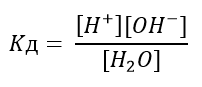
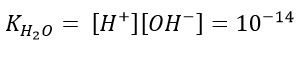
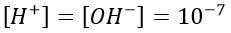
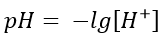
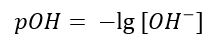
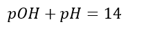
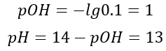

Что такое pH и как его считать?
Начнём с того, что молекулы в растворах распадаются на заряженные частицы. Этот процесс называется
диссоциацией. Например, если растворить поваренную соль (NaCl), произойдёт такой распад:

Как ни странно, вода также может диссоциировать:

Однако вода диссоциирует очень слабо - к этому способна лишь одна молекула из миллионов. Другие молекулы
могут быть более активными. Количество молекул вещества, которые диссоциируют на ионы определяется
константой диссоциации. Константа диссоциации для воды расчитывается так:

То есть это умноженные концентрации ионов, делённые на концентрацию не распавшихся (недиссоциировавших) молекул.
Константа диссоциации для воды равна 1.8 * 10-16
От константы диссоциации воды можно придти к другому термину - ионному произведению воды. Как видно
из названия, это произведение концентраций ионов, на которое распадается вещество.

Ионное произведение воды является константой. Как видно из уравнения диссоциации чистой воды, число частиц
H+ равно числу частиц OH-, а следовательно

Теперь перейдём непосредственно к pH, который также называют водородным показателем.
pH это просто отрицательный десятичный логарифм от концентрации ионов H+. То есть

Таким образом, зная концентрацию ионов H+ и имея под рукой калькулятор, можно вычислить pH раствора.
Так, pH чистой воды равен 7 (исходя из ионного произведения воды) то есть среда нейтральная.
Если pH меньше 7, то раствор будет иметь кислую среду, если больше - то щелочную.
Но почему кислоты дают именно кислую среду, а щёлочи - щелочную?
Рассмотрим диссоциацию угольной кислоты:

Как видно из этого уравнения, при диссоциации кислоты образуются ионы H+. Соответственно,
концентрация этих ионов увеличивается, а логарифм (как и pH) уменьшается.
Если в растворе находится щёлочь (например гидроксид натрия), то концентрация ионов H+ уменьшается, так
как образующиеся OH- группы связываются с ними, pH при этом повышается:

Минимальный pH равен 0, в то время как максимальный равен 14 (отрицательный логарифм от ионного произведения воды).
Иногда нам может быть неизвестна концентрация ионов H+, например когда по условию задачи мы
расстворяем щёлочь. Предположим, у нас есть 1 литр раствора, в котором содержится 0.1 моль гидроксида натрия
и все молекулы распадаются на ионы. Тогда, согласно уравнению

концентрация ионов OH- также будет равна 1 моль/литр. Исходя из ионного произведения воды, мы можем
вычислить концентрацию H+:

Однако, в данном случае лучше пользоваться показателем pOH. pOH - это тот же обратный десятичный логарифм, но от
концентрации ионов OH-:

pH и pOH связаны отношением

Используя это, задачу можно решить так:
